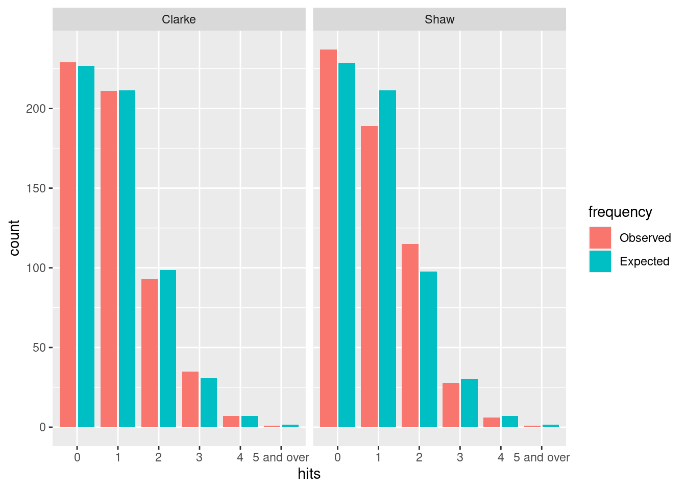
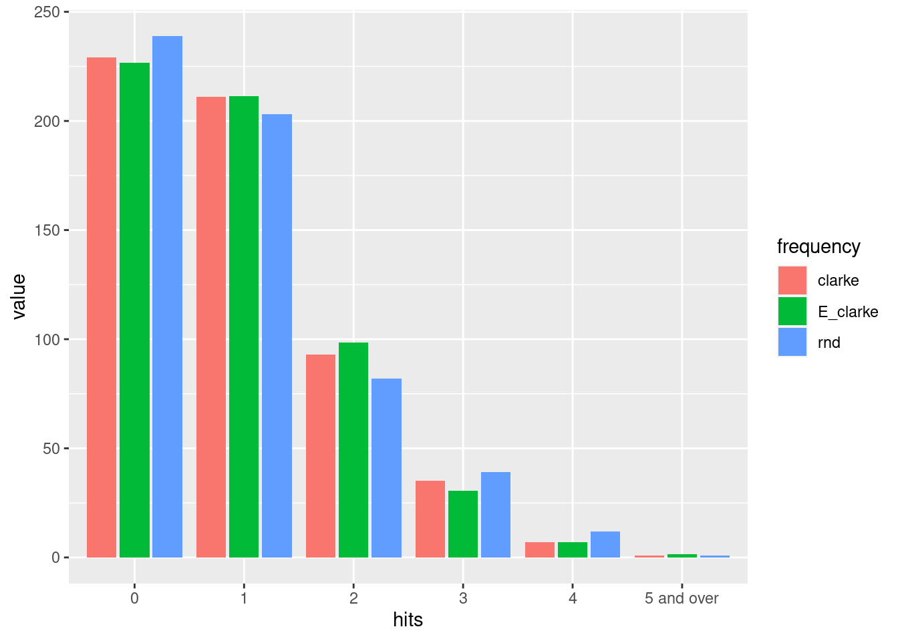

V-1 비행 폭탄은 제2차 세계 대전에서 나치독일이 개발한 무기이다. 현대 순항 미사일의 효시로 항법 장치가 빈약하여 정밀 타격을 기대하기 어려웠지만, 여러모로 가성비 있는 로켓이었다[1]. 1944년 6월부터 9개월동안 2300개의 비행 폭탄이 런던에 떨어졌고 5500명 이상의 사망자가 발생하였다[2].
교과서적으로 포아송 분포 사례로 언급되는 폭격 Clarke의 데이터[3]는 그가 사용한 폭격 지도을 얻을 수 없기 때문에 재현이 힘들었다. 두 명의 Shaw[2]는 Clarke의 분석 결과를 재현하기 위하여 2015년도에 재 출판된 지도 표시 데이터에서 표본을 추출하여 분석을 수행하였다. 단위 지역 당 V-1 타격 수는 Clarke의 경우 \(\lambda = 537 / 576 = 0.932\)이고 Shaw의 경우 \(\lambda = 532 / 576 = 0.923\)이다.
library(tidyverse)
london <- tibble(hits = c("0", "1", "2", "3", "4", "5 and over"),
clarke = c(229, 211, 93, 35, 7, 1),
shaw = c(237, 189, 115, 28, 6, 1))
lambda_clarke <- 537 / 576
lambda_shaw <- 532 / 576
london <- london %>%
mutate(i_hits = 0:5,
E_clarke = ifelse(i_hits < 5,
dpois(i_hits, lambda = lambda_clarke),
1 - ppois(4, lambda_clarke)),
E_shaw = ifelse(i_hits < 5,
dpois(i_hits, lambda = lambda_shaw),
1 - ppois(4, lambda_shaw)),
E_clarke = E_clarke * 576,
E_shaw = E_shaw * 576) %>%
select(-i_hits) %>%
relocate(hits, clarke, E_clarke, shaw, E_shaw)
london## # A tibble: 6 x 5
## hits clarke E_clarke shaw E_shaw
## <chr> <dbl> <dbl> <dbl> <dbl>
## 1 0 229 227. 237 229.
## 2 1 211 211. 189 211.
## 3 2 93 98.5 115 97.6
## 4 3 35 30.6 28 30.0
## 5 4 7 7.14 6 6.94
## 6 5 and over 1 1.57 1 1.51london %>%
pivot_longer(cols = -hits) %>%
mutate(author = ifelse(str_ends(name, "clarke"), "Clarke", "Shaw"),
frequency = ifelse(str_starts(name, "E"), "Expected", "Observed"),
frequency = fct_rev(frequency)) %>%
ggplot(aes(x = hits, y = value, fill = frequency)) +
geom_bar(stat = "identity", position = position_dodge2()) +
facet_wrap(~ author) +
ylab("count")
관측 빈도와 포와송 기대 빈도는 Clarke 데이터는 정말 교과서적으로 맞고, Shaw 데이터도 어느 정도 일치한다. 카이제곱검점을 통하여 적합도를 판단해보자. 전체 빈도와 폭탄의 총 개수 두 개의 자유도를 사용하므로 그만큼 자유도를 잃게 된다. chisq.test 함수는 총 빈도에 대하여 하나의 자유도를 잃는다고 가정하므로 직접 사용할 수는 없지만 카이제곱 통계량 계산값은 활용할 수 있다.
ct_1 <- with(london, chisq.test(x = clarke, p = E_clarke, rescale.p = TRUE))## Warning in chisq.test(x = clarke, p = E_clarke, rescale.p = TRUE): Chi-squared
## approximation may be incorrectct_2 <- with(london, chisq.test(x = shaw, p = E_shaw, rescale.p = TRUE))## Warning in chisq.test(x = shaw, p = E_shaw, rescale.p = TRUE): Chi-squared
## approximation may be incorrectp_clarke <- 1 - pchisq(ct_1$statistic, 4)
p_shaw <- 1 - pchisq(ct_2$statistic, 4)
p <- c(p_clarke, p_shaw)
names(p) <- c("Clarke", "Shaw")
print(p)## Clarke Shaw
## 0.8831505 0.1849099Shaw의 분석도 Clarke 데이터 만큼은 아니지만 포아송 분포 적합을 기각할 수는 없다. 다만, Shaw는 자신 데이터가 포아송 기대 분포와 p=0.70라고 제시하여 이 포스트의 계산값 p=0.18과 차이가 난다.
Clarke의 데이터를 기준으로 폭탄 537개가 576구역 위에 무작위로 떨어졌다고 보자.
set.seed(952)
bombs <- tibble(id = sample(576, size = 537, replace = TRUE)) %>%
group_by(id) %>%
count() %>%
group_by(n) %>%
count() %>%
rename(i_hits = n) %>%
rename(rnd = nn) %>%
ungroup()## Storing counts in `nn`, as `n` already present in input
## ℹ Use `name = "new_name"` to pick a new name.bombs <- bombs %>%
add_row(i_hits = 0, rnd = 576 - bombs %>% summarise(sum(rnd)) %>% pull()) %>%
arrange(i_hits)
london %>%
mutate(i_hits = 0:5) %>%
left_join(bombs) %>%
select(hits, clarke, E_clarke, rnd) %>%
pivot_longer(cols = -hits, names_to = "frequency") %>%
ggplot(aes(y = value, x = hits, fill = frequency)) +
geom_bar(stat = "identity", position = position_dodge2())## Joining, by = "i_hits"
이 시뮬레이션 결과는 하나의 격자가 \(p = 1/576 = 0.00173\)의 확률로 피격당할 때 폭탄의 수 \(n=537\)개가 떨어지는 이항 분포를 따른다는 것을 알 수 있다. \(p \ll 1\)이므로 이항 분포의 평균 \(np = \lambda = 0.932\)을 이용하여 포와송 분포로 근사할 수 있다는 것도 확인하였다. 추가 적인 내용은 Bulter의 강의 노트를 참고하길 바란다[4].
당시 런던 남부에 살고 있는 평범한 시민에게는, 탄착군이 형성되지 않고 다음 폭탄이 어디에 떨어질 지 모르는 비행 폭탄의 존재는 공포였을 것이다. 특히 V-1 엔진에서 나는 웅웅 거리는 특유의 소리가 내 머리 근처에서 멈추지 않길 숨죽였을 것이다. 폭격 와중에도 피해 상황을 수집·분석하고 스파이에게 오정보를 흘리는 공작을 수행했을 당시 사람들에게 경의를 표한다.